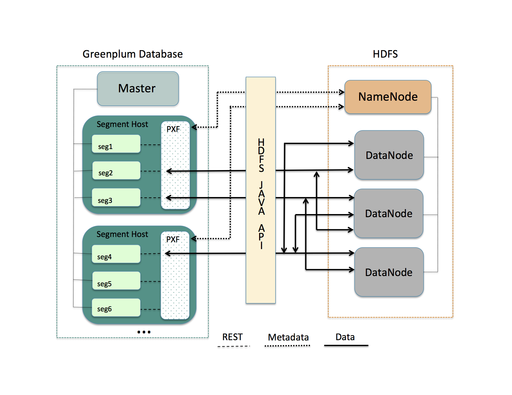

Accessing Hadoop
PXF is compatible with Cloudera, Hortonworks Data Platform, and generic Apache Hadoop distributions. PXF is installed with HDFS, Hive, and HBase connectors. You use these connectors to access varied formats of data from these Hadoop distributions.
Architecture
HDFS is the primary distributed storage mechanism used by Apache Hadoop. When a user or application performs a query on a PXF external table that references an HDFS file, the SynxDB coordinator host dispatches the query to all segment instances. Each segment instance contacts the PXF Service running on its host. When it receives the request from a segment instance, the PXF Service:
- Allocates a worker thread to serve the request from the segment instance.
- Invokes the HDFS Java API to request metadata information for the HDFS file from the HDFS NameNode.
Figure: PXF-to-Hadoop Architecture

A PXF worker thread works on behalf of a segment instance. A worker thread uses its SynxDB gp_segment_id and the file block information described in the metadata to assign itself a specific portion of the query data. This data may reside on one or more HDFS DataNodes.
The PXF worker thread invokes the HDFS Java API to read the data and delivers it to the segment instance. The segment instance delivers its portion of the data to the SynxDB coordinator host. This communication occurs across segment hosts and segment instances in parallel.
Prerequisites
Before working with Hadoop data using PXF, ensure that:
- You have configured PXF, and PXF is running on each SynxDB host. See Configuring PXF for additional information.
- You have configured the PXF Hadoop Connectors that you plan to use. Refer to Configuring PXF Hadoop Connectors for instructions. If you plan to access JSON-formatted data stored in a Cloudera Hadoop cluster, PXF requires a Cloudera version 5.8 or later Hadoop distribution.
- If user impersonation is enabled (the default), ensure that you have granted read (and write as appropriate) permission to the HDFS files and directories that will be accessed as external tables in SynxDB to each SynxDB user/role name that will access the HDFS files and directories. If user impersonation is not enabled, you must grant this permission to the
gpadminuser. - Time is synchronized between the SynxDB hosts and the external Hadoop systems.
HDFS Shell Command Primer
Examples in the PXF Hadoop topics access files on HDFS. You can choose to access files that already exist in your HDFS cluster. Or, you can follow the steps in the examples to create new files.
A Hadoop installation includes command-line tools that interact directly with your HDFS file system. These tools support typical file system operations that include copying and listing files, changing file permissions, and so forth. You run these tools on a system with a Hadoop client installation. By default, SynxDB hosts do not include a Hadoop client installation.
The HDFS file system command syntax is hdfs dfs <options> [<file>]. Invoked with no options, hdfs dfs lists the file system options supported by the tool.
The user invoking the hdfs dfs command must have read privileges on the HDFS data store to list and view directory and file contents, and write permission to create directories and files.
The hdfs dfs options used in the PXF Hadoop topics are:
| Option | Description |
|---|---|
-cat | Display file contents. |
-mkdir | Create a directory in HDFS. |
-put | Copy a file from the local file system to HDFS. |
Examples:
Create a directory in HDFS:
$ hdfs dfs -mkdir -p /data/pxf_examples
Copy a text file from your local file system to HDFS:
$ hdfs dfs -put /tmp/example.txt /data/pxf_examples/
Display the contents of a text file located in HDFS:
$ hdfs dfs -cat /data/pxf_examples/example.txt
Connectors, Data Formats, and Profiles
The PXF Hadoop connectors provide built-in profiles to support the following data formats:
- Text
- CSV
- Avro
- JSON
- ORC
- Parquet
- RCFile
- SequenceFile
- AvroSequenceFile
The PXF Hadoop connectors expose the following profiles to read, and in many cases write, these supported data formats:
| Data Source | Data Format | Profile Name(s) | Deprecated Profile Name | Supported Operations |
|---|---|---|---|---|
| HDFS | delimited single line text | hdfs:text | n/a | Read, Write |
| HDFS | delimited single line comma-separated values of text | hdfs:csv | n/a | Read, Write |
| HDFS | multi-byte or multi-character delimited single line csv | hdfs:csv | n/a | Read |
| HDFS | fixed width single line text | hdfs:fixedwidth | n/a | Read, Write |
| HDFS | delimited text with quoted linefeeds | hdfs:text:multi | n/a | Read |
| HDFS | Avro | hdfs:avro | n/a | Read, Write |
| HDFS | JSON | hdfs:json | n/a | Read, Write |
| HDFS | ORC | hdfs:orc | n/a | Read, Write |
| HDFS | Parquet | hdfs:parquet | n/a | Read, Write |
| HDFS | AvroSequenceFile | hdfs:AvroSequenceFile | n/a | Read, Write |
| HDFS | SequenceFile | hdfs:SequenceFile | n/a | Read, Write |
| Hive | stored as TextFile | hive, [hive:text] (hive_pxf.html#hive_text) | Hive, HiveText | Read |
| Hive | stored as SequenceFile | hive | Hive | Read |
| Hive | stored as RCFile | hive, hive:rc | Hive, HiveRC | Read |
| Hive | stored as ORC | hive, hive:orc | Hive, HiveORC, HiveVectorizedORC | Read |
| Hive | stored as Parquet | hive | Hive | Read |
| Hive | stored as Avro | hive | Hive | Read |
| HBase | Any | hbase | HBase | Read |
Choosing the Profile
PXF provides more than one profile to access text and Parquet data on Hadoop. Here are some things to consider as you determine which profile to choose.
Choose the hive profile when:
- The data resides in a Hive table, and you do not know the underlying file type of the table up front.
- The data resides in a Hive table, and the Hive table is partitioned.
Choose the hdfs:text, hdfs:csv profiles when the file is text and you know the location of the file in the HDFS file system.
When accessing ORC-format data:
- Choose the
hdfs:orcprofile when the file is ORC, you know the location of the file in the HDFS file system, and the file is not managed by Hive or you do not want to use the Hive Metastore. - Choose the
hive:orcprofile when the table is ORC and the table is managed by Hive, and the data is partitioned or the data includes complex types.
Choose the hdfs:parquet profile when the file is Parquet, you know the location of the file in the HDFS file system, and you want to take advantage of extended filter pushdown support for additional data types and operators.
Specifying the Profile
You must provide the profile name when you specify the pxf protocol in a CREATE EXTERNAL TABLE command to create a SynxDB external table that references a Hadoop file or directory, HBase table, or Hive table. For example, the following command creates an external table that uses the default server and specifies the profile named hdfs:text to access the HDFS file /data/pxf_examples/pxf_hdfs_simple.txt:
CREATE EXTERNAL TABLE pxf_hdfs_text(location text, month text, num_orders int, total_sales float8)
LOCATION ('pxf://data/pxf_examples/pxf_hdfs_simple.txt?PROFILE=hdfs:text')
FORMAT 'TEXT' (delimiter=E',');